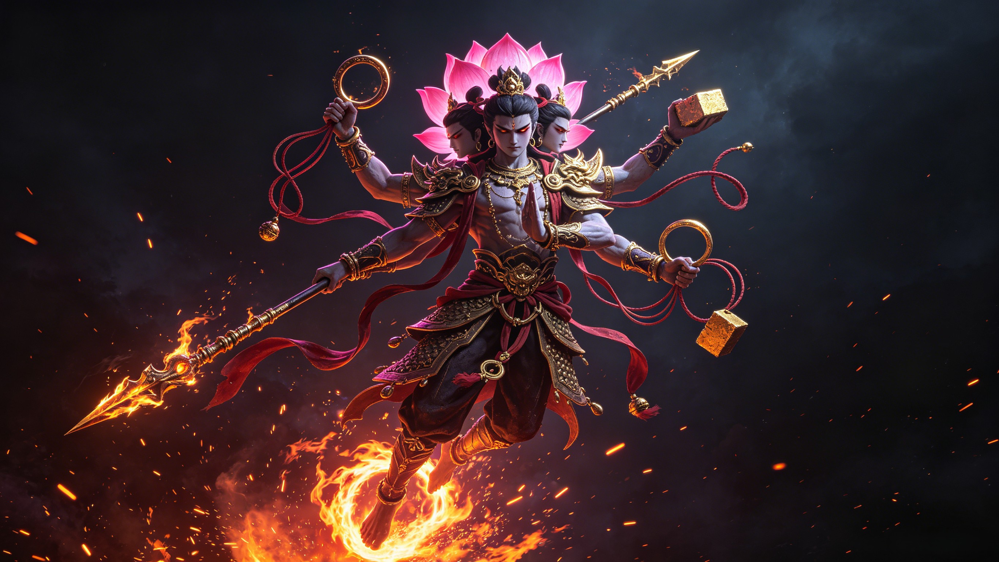
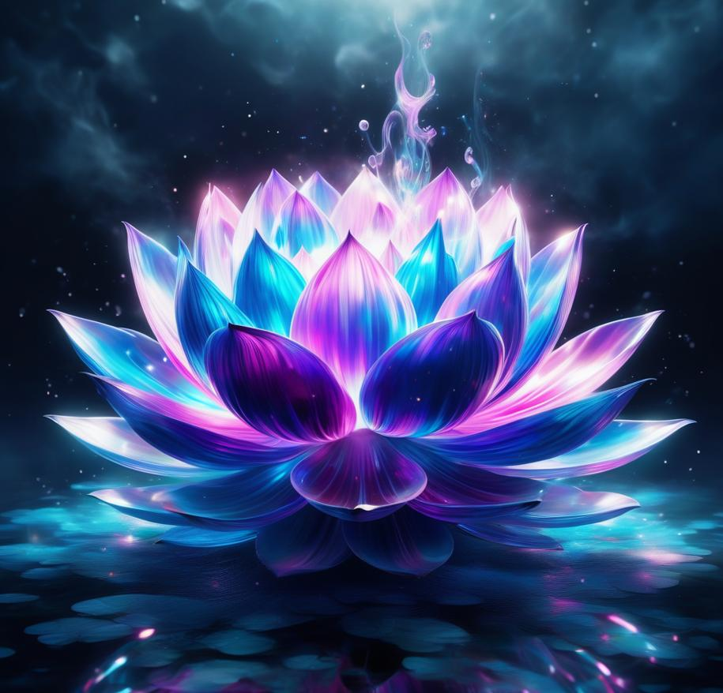

Origins
A spirit pearl. A child who killed a god. A sacrifice no other deity has ever made. And a resurrection from lotus roots that created a warrior who could not be killed.
A divine spirit pearl descended from the celestial realm into the household of Li Jing, the Pagoda-Bearing General. His wife, Lady Yin, was pregnant for three years and six months — longer than any human pregnancy in recorded myth. When she finally gave birth, what emerged was not a child but a sphere of flesh. Li Jing, horrified, struck it with his sword. From within stepped a boy who could already walk, talk, and radiate divine light. The immortal Taiyi Zhenren arrived that very day to name him Nezha and accept him as a disciple.
At the age of seven, Nezha bathed in the Eastern Sea, washing his Red Armillary Sash. The sash churned the waters so violently that the palace of Ao Guang, the Dragon King of the Eastern Sea, shook to its foundations. The Dragon King sent his son, Ao Bing, to investigate. Words were exchanged. Violence erupted. Nezha killed Ao Bing — and then tore the tendons from the dragon prince's body, an act of shocking brutality for a child. The Dragon King, consumed by grief and fury, demanded justice from the Jade Emperor himself. He threatened to flood the entire Chen Tang Pass and drag Li Jing before the celestial court.
Faced with the destruction of his home and the prosecution of his family, Nezha made a choice that no other deity in Chinese mythology has ever made. He cut out his own flesh and returned it to his mother. He stripped his bones from his body and returned them to his father. "I owe you nothing now," he said. "From this moment, my debt is paid." Then he died. He was seven years old. It was an unforgivable crime followed by an unfathomable sacrifice — and it changed everything.
"我与你无干了" — I am no longer yours.

Nezha's spirit, still tethered to the mortal realm, appeared to his mother in a dream. He begged her to build a temple where people could offer incense to sustain his wandering soul. She did — but Li Jing, ever the loyal Confucian official who saw spirit worship as unseemly, discovered the temple and destroyed it with his own hands. Enraged by this final betrayal, Taiyi Zhenren gathered lotus roots, stems, and petals from a sacred pond. He fashioned a new body — a divine form, impervious to all weapons, radiating sacred fire. Nezha rose from the lotus pond reborn: no longer a mortal child, but a warrior god with the Wind Fire Wheels at his feet and the Fire-Tipped Spear in his hand.
Newly reborn and armed with divine weapons, Nezha pursued Li Jing across the three realms, intent on revenge for the destruction of his temple. Li Jing fled — his son's fire too fierce to face. Only the intervention of the immortal Randeng Daoren ended the chase, granting Li Jing a Golden Pagoda powerful enough to contain even Nezha's fury. Father and son reached a fragile truce, forever bound by the pagoda's shadow. In time, Nezha would channel that fury into righteous battle, becoming the Marshal of the Central Altar — leading the armies of heaven against demons, dragons, and whatever threatened the mortal world.